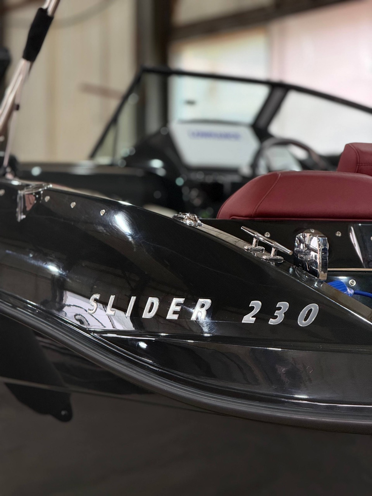
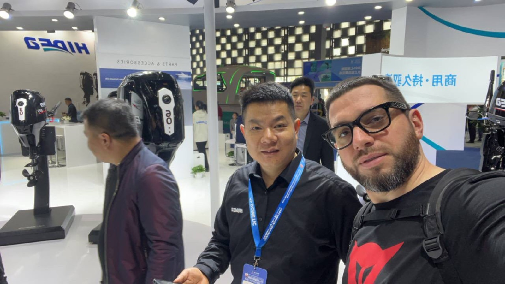
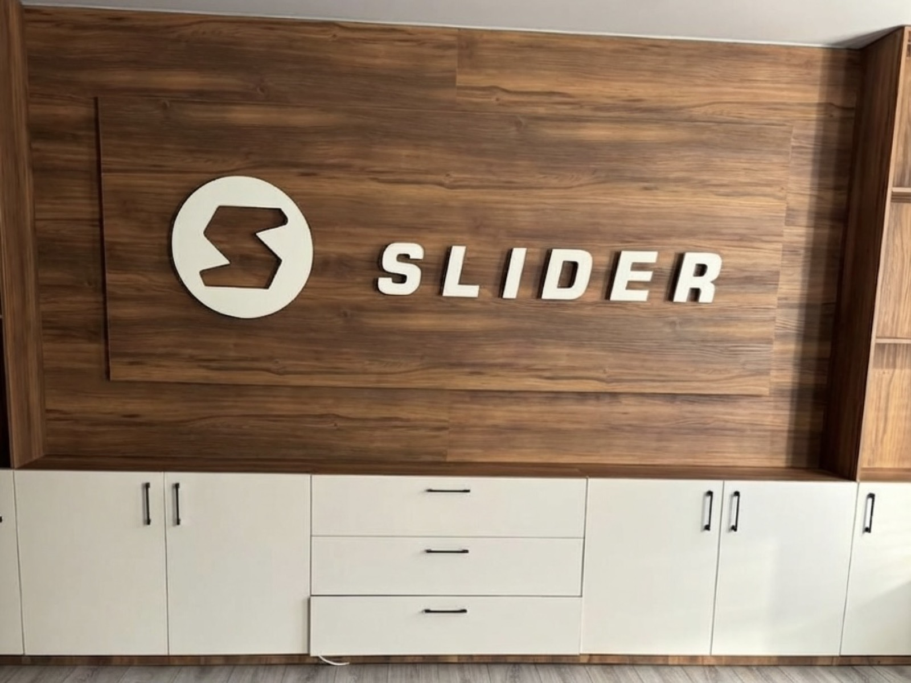
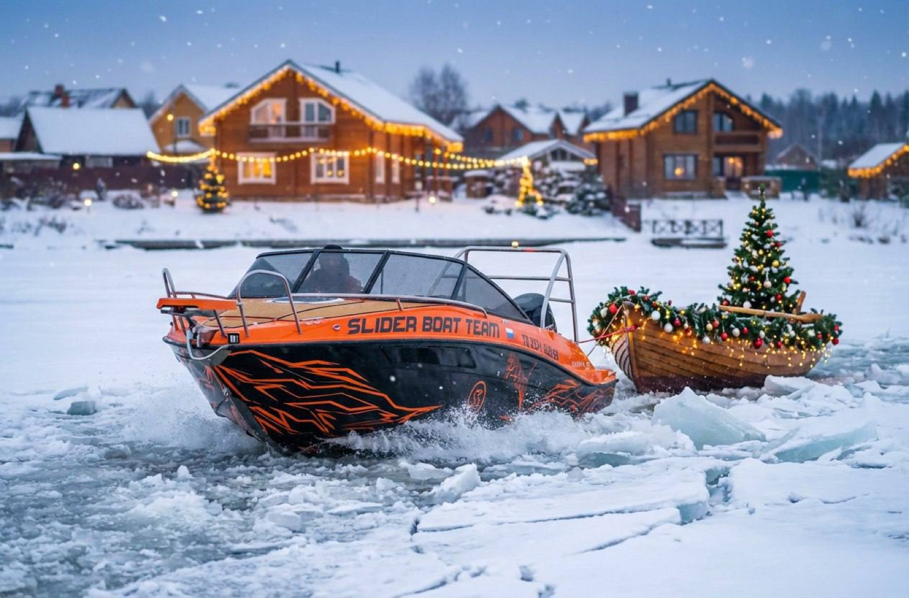
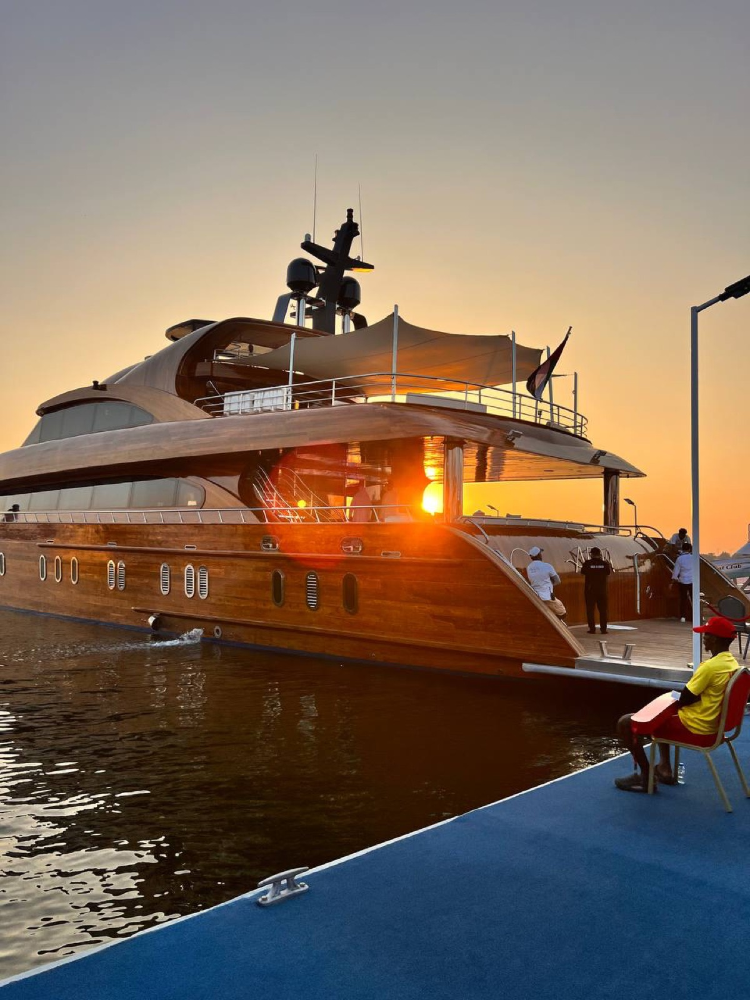
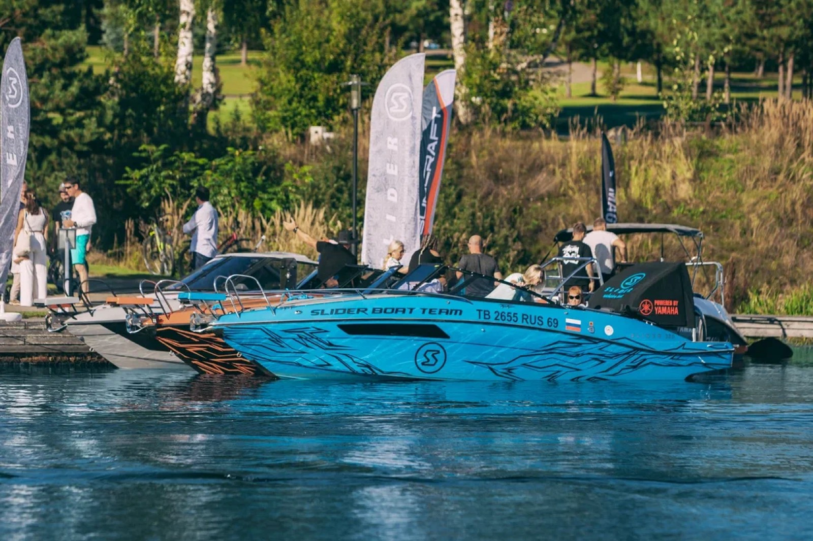

Катера под торговой маркой «Slider» производятся с 2003 года, и уже хорошо известны и узнаваемы в водных акваториях России.

С 17 по 19 сентября в Конаково Ривер Клаб пройдет закрытая дилерская конференция-презентация «В фарватере HIDEA - вместе курсом на успех»!
Читать →
Сдали клиенту стильный Slider 230, укомплектованный подвесным лодочным мотором Mercury F150 Pro XS.
Читать →
Многим из вас известен наш эксклюзивный проект Slider 210 ST по выставкам и мероприятиям на воде.
Читать →
Пока готовимся к новому сезону в России, отправились расширять на 29-ю Международную выставку катеров в Шанхае (CIBS 2026)!
Читать →
Апрель для нашей верфи начался с двух знаковых событий: интервью программе Вести Тверь и поездки на Китайскую международную выставку яхт и катеров CIBS Shanghai 2026.
Читать →
С 26 февраля по 1 марта в Крокус Экспо состоится Международная выставка катеров и яхт «Московское Боут Шоу», где наша верфь представит весь модельный ряд, новинки, а также проведет розыгрыш призов.
Читать →
Наступивший 2026 год обещает стать насыщенным и ярким.
Читать →
Мы выходим на финишную прямую невероятного, насыщенного года, ставшего для нас временем больших перемен.
Читать →
Команда Slider в Эмиратах: открываем новые горизонты в ходе бизнес-визита в столицу инноваций и передового судостроения.
Читать →
С 26 по 28 сентября принимали участие в выставке SPIBS (St. Petersburg International Boat Show), которая прошла в уютном яхт-клубе "Светлана" в Санкт-Петербурге!
Читать →
С радостью сообщаем Вам, что в сентябре 2025 г. производство стеклопластиковых катеров Slider переехало на новую просторную территорию!
Читать →
С 5 по 7 сентября верфь Slider приняла участие в выставке катеров и яхт в Завидово - "Яхты и гольф".
Читать →